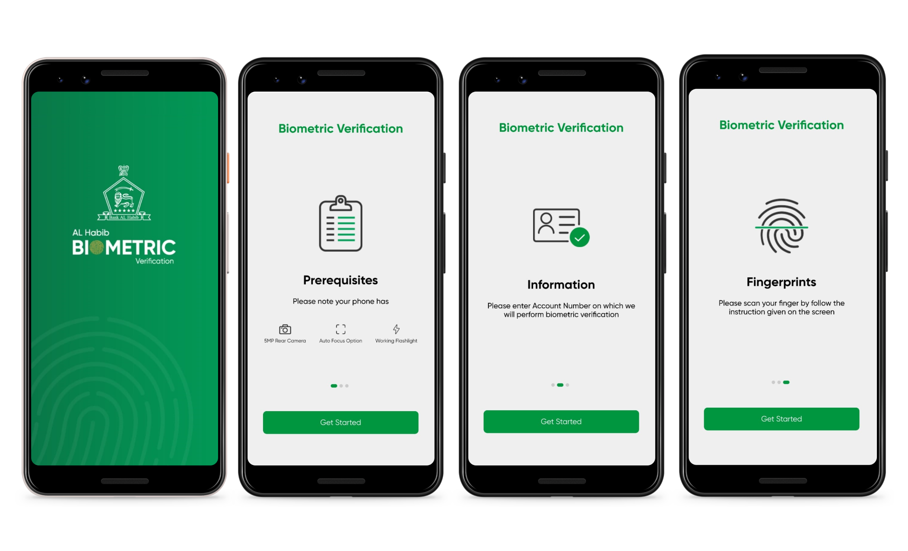

Wireframes & Prototypes
After completing the competitive audit and gathering all necessary information, we began developing the user flow for our app. Our focus was on creating a seamless and intuitive user experience that leverages the latest in biometric technology to provide users with a secure and convenient authentication solution.
SKETCHES & WIREFRAMES
Before creating wireframes for a biometric verification app, I brainstormed different ideas and sketched them based on the app's user flow.


UPDATED USER FLOW & WIREFRAMES
Due to revised requirements, the wireframes and user flow of the AL Habib Biometric Verification App were updated accordingly.

Few things that we wanted to tell the users through carousel before they could start their verification process.
For user guide we came up with a different idea by having a GIF which guides users about scanning their fingers.

FINAL DESIGNS
